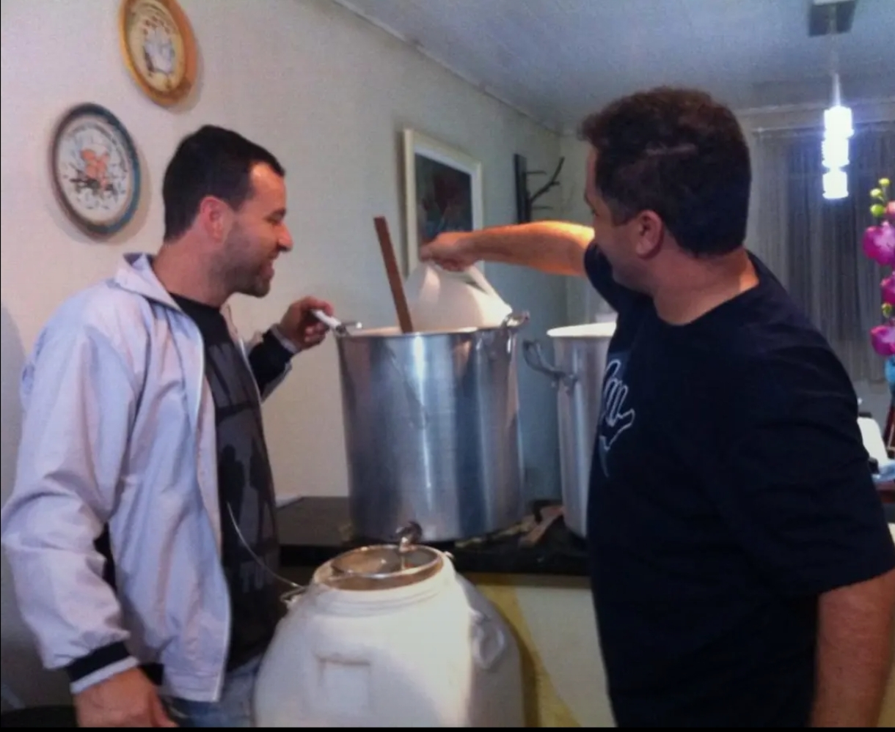

Nossa História
A ideia de fazer a própria cerveja surgiu a partir da descoberta da cerveja artesanal e de entender que uma cerveja vai muito além de ser estupidamente gelada: ela tem sabor, cor e aromas.
Tudo começou com as primeiras brassagens em 2014, em Curitiba, ao lado do amigo Leonardo. Foram erros, risadas, e algumas cervejas intragáveis até que, em 2017, já em Matinhos, as receitas começaram a ganhar um padrão e qualidade. Foi aí que surgiu a ideia de formalizar o negócio.
Essa etapa foi difícil. Bem na pandemia, em um momento em que não era possível recorrer a outras cervejarias para pedir ajuda, o conhecimento veio através de muita pesquisa em sites, fóruns e YouTube. Foram meses de estudo e dedicação.
Depois de muito esforço, conseguimos o nosso registro no MAPA em Abril de 2022, tornando-nos a primeira cervejaria artesanal registrada em Matinhos. De lá para cá, os desafios não pararam, mas seguimos firmes porque não desistimos.
Então, vamos olhar para trás para saber como dar mais alguns passos e, quem sabe, lá na frente, olhar para trás novamente e saber que vencemos.
